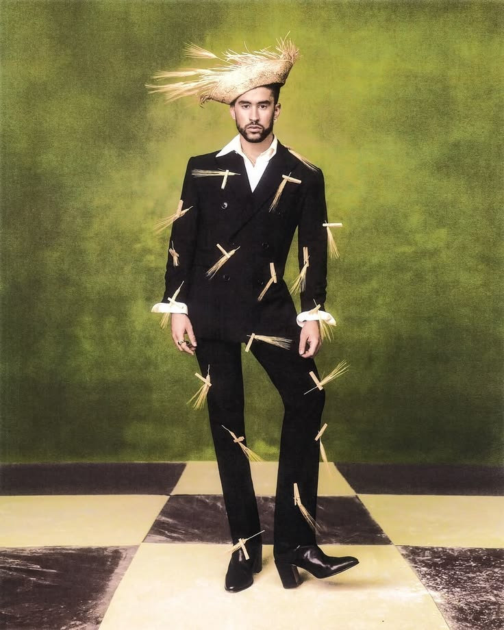
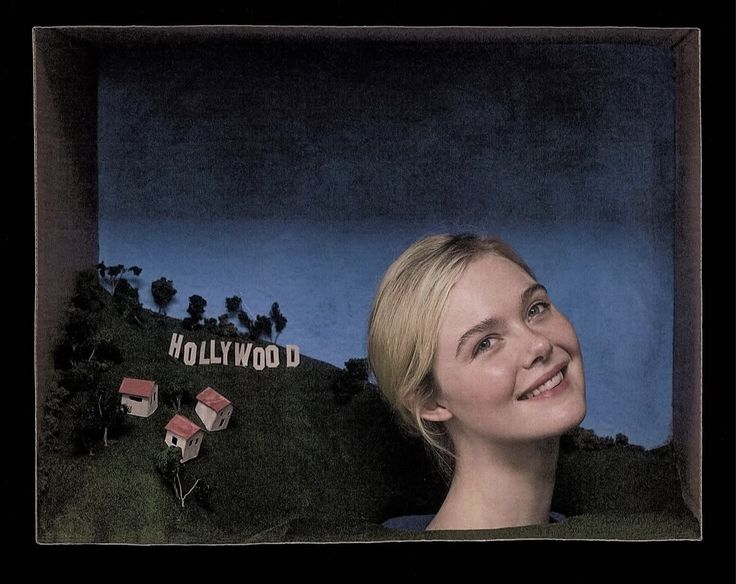
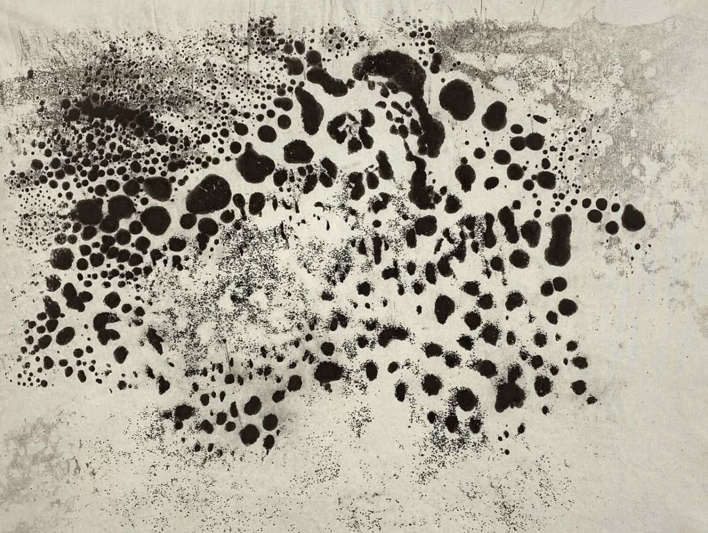

Edición de otoño
01
Szilveszter
MAKO
Una introspección a través de su proceso creativo.

Desliza el mouse sobre la foto para revelar el color
01
Una introspección a través de su proceso creativo.

Quien es
En su estudio, el silencio tiene textura. Los rollos de cámara descansan junto a libros abiertos, anotaciones a lápiz y muestras de luz pegadas en la pared.
«Una fotografía no registra solo lo que estaba frente a mí —dice—. También guarda la forma en que decidí mirar ese instante».
“La luz no ilumina: revela lo que ya estaba escondido.”

Las primeras imágenes nacieron al amanecer, antes de que el ruido cotidiano borrara los contrastes.
Archivo personal
Próxima entrega
La mirada sigue cambiando incluso cuando el paisaje permanece igual.

La luz transforma los materiales, los objetos y también la distancia que nos separa de ellos.
Cuaderno de campo
4 Una habitación es otra a las seis de la mañana. Los colores pierden volumen y las sombras ocupan todo el centro de la escena.
Trabajar con luz natural exige paciencia: esperar el instante exacto y abandonar la imagen si no aparece la tensión necesaria.
“Una escena puede cambiar sin que nadie la haya movido.”
05
Objetos simples conservan historias que no aparecen en los libros.
Selección editorial
Nota editorial
El encuadre decide qué parte del mundo entra a la historia.
Epílogo — La última luz
Antes de cerrar el estudio, la autora revisa una última imagen. El papel conserva una marca de luz, una sombra y el silencio de una tarde completa.
Tal vez ese sea el objetivo: no explicar el lugar, sino dejar que vuelva a aparecer cada vez que alguien mira.
“Fotografiar es aprender a volver.”